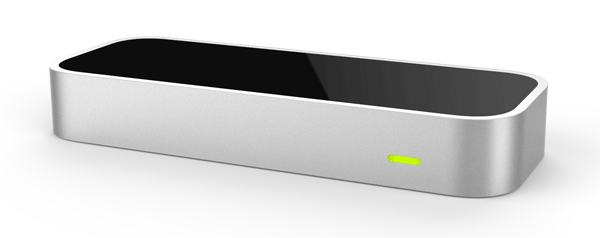

Leap Motion. What is it? Leap motion is an advanced hand tracking technology that is used in both AR and VR as shown through many examples found here. This is unique technology that has been around much longer than the Vive and Oculus have been around. This is a clean way to provide hand tracking technology, within a close proximity, of the device itself.
Leap Motion itself is a small container with two cameras to sense depth within a given field that is in its view.
Leap Motion can be used in many ways that make it easier to interect with object within VR and AR. If you back to the examples, you can see some really cool integrations of the technology in AR and VR experiences.